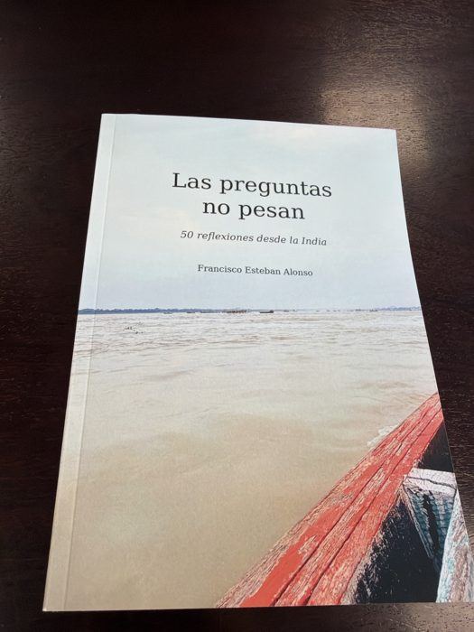
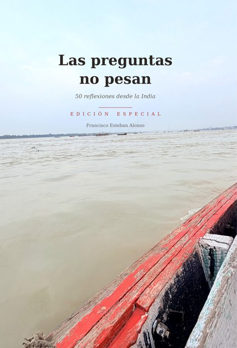
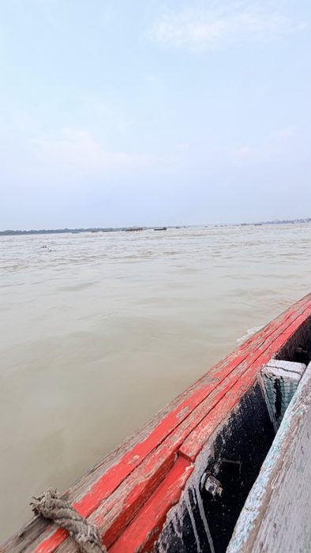
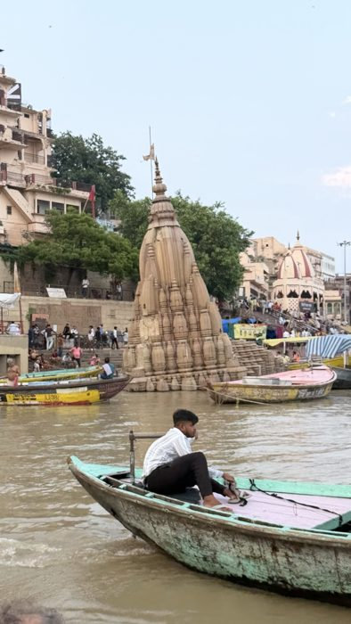
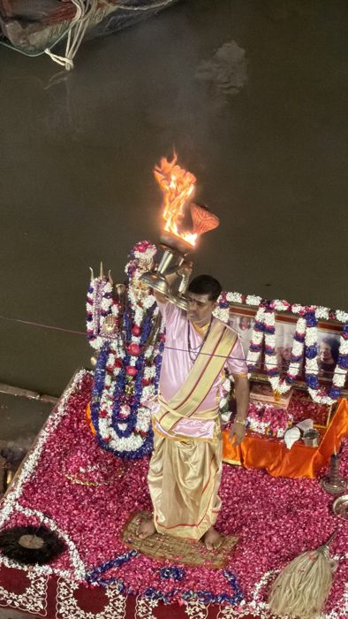
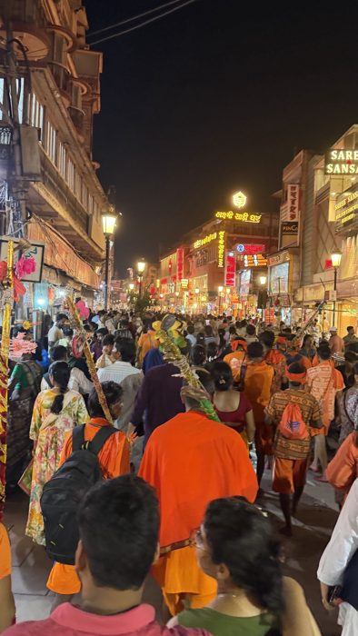
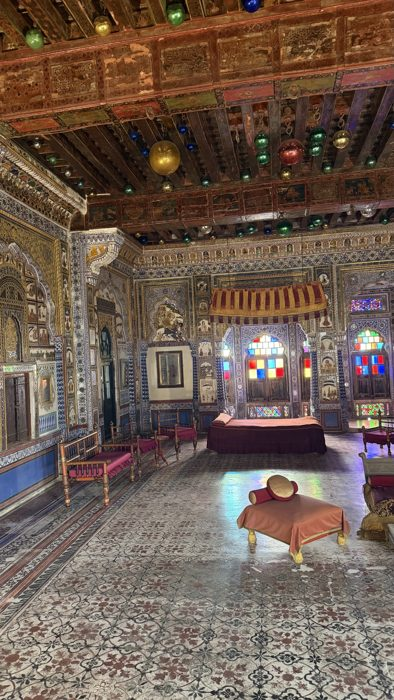
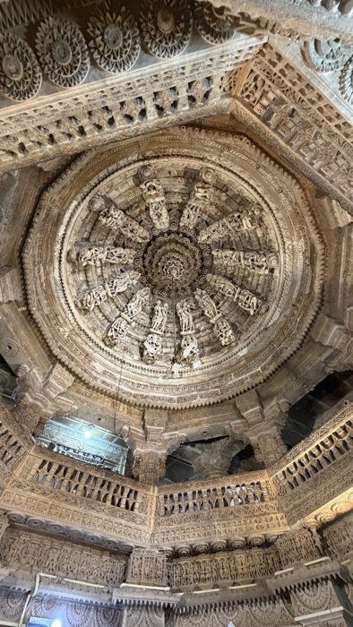
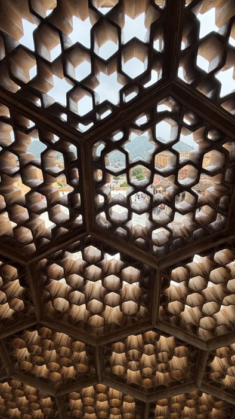
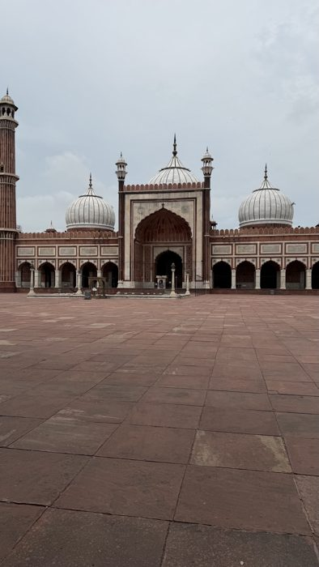

Sala de prensa
Las preguntas no pesan
50 reflexiones desde la India · Francisco Esteban Alonso
Aquí está todo lo necesario para informar sobre el libro: la nota de prensa, la ficha, las portadas y fotografías del viaje en alta calidad. Todo se puede usar libremente para hablar del libro, citando al autor en las fotografías.
El libro en breve
La habitación más bonita del viaje fue una en la que nunca entré.
Un viaje por la India, de Delhi al desierto de Rajastán y de Sarnath a la orilla del Ganges en Benarés, contado en cincuenta reflexiones breves. Cada una nace de un momento concreto: una pira junto al río, una vaca dormida a la sombra, un templo que se hunde, una noche en la que, por fin, todo estaba en su sitio.
Páginas sobre la belleza que no se puede tocar, el ruido y el silencio, la fe y el negocio, y sobre lo difícil y lo sencillo que es, a veces, estar presente. Un libro para abrir por cualquier página y quedarse un rato.
- Cada reflexión va con una fotografía hecha por el autor con el móvil.
- La ruta: Delhi, Bikaner, Jaisalmer, Jodhpur, Jaipur, Agra, Fatehpur Sikri, Sarnath y Benarés.
- Quien lo regale puede pedir una dedicatoria personal del autor desde la web del libro.
El autor
Francisco Esteban Alonso es natural de Corrales del Vino (Zamora). Como tantos de su tierra, tuvo que marcharse a trabajar fuera, y lleva casi 30 años afincado en Badajoz, donde tiene dos hijos extremeños. Este es su primer libro, escrito en apenas unos meses a la vuelta del viaje.
Atiende entrevistas para prensa, radio o vídeo, y envía un ejemplar a los medios que quieran reseñar el libro. Para pedirlo, escribid a laspreguntasnopesan@gmail.com.
Nota de prensa
Texto completo
Portadas




Fotografías del viaje
Ocho de las fotografías del libro. Pulsa en una para descargarla en alta calidad. Crédito: Francisco Esteban Alonso.
















Datos del libro
| Tapa blanda | Edición especial, tapa dura | |
|---|---|---|
| Formato | 14,8 × 21 cm | 17,8 × 25,4 cm |
| Páginas | 62, a todo color | 78, a todo color |
| Extras | — | Mapa de la ruta, 15 fotografías a página completa y página para regalarlo dedicado |
| ISBN | 979-8-161-92510-2 | 979-8-162-30951-2 |
| Precio | 11,75 € | 29,90 € |
Idioma: español · Edición de autor · Publicado en octubre de 2026 · Literatura de viaje y reflexión personal.
Contacto
Correo: laspreguntasnopesan@gmail.com
Web del libro: laspreguntasnopesan.github.io